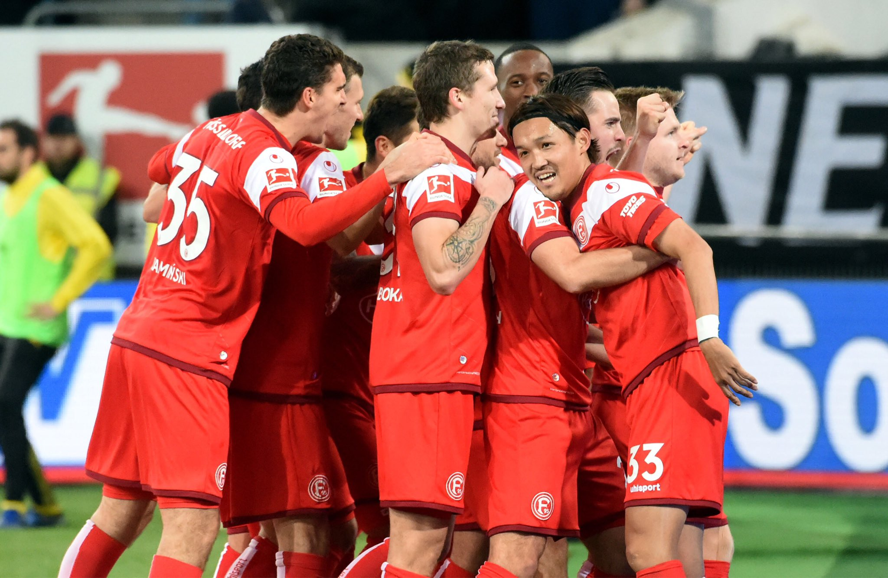

3. Examining Düsseldorf's Defense Today
Düsseldorf’s defense today was painful to watch as they hopelessly surrendered to the Rekordmeister’s attack. The only single positive from today’s match is the performance by Kastenmaier, without whom the scoreline could be in the double-digits today. However, even that shows how disastrous the defense was today, with more than 20 shots today by Bayern. An own-goal early in the match signaled the end of all trying by Düsseldorf defenders as they conceded 4 or more goals a third consecutive match against Bayern. With them having 2 clean sheets out of 9 games before this one, this was a very humbling day for Uwe Rosler’s men. With the defenders shying away from the ball, fearing they might get hit by it before conceding a goal from a corner, it simply doesn’t provide a good impression on those defenders.
4. Can Düsseldorf Survive in the Bundesliga?
With Dusseldorf entering this game on a very positive note, riding a six-game unbeaten run, beating Schalke in the last game, they soon got a taste of the table-leaders Bayern. Their survival in the Bundesliga, however, as odd it might sound, should not be drawn from today’s performance against Bayern, as Bayern are truly an anomaly in the league. Düsseldorf should draw confidence from the previous Schalke game, fix their defensive issues from today, get Thommy creating chances and Karaman continuing his hot run of form and they actually might not end up going down this season.

5. Bayern’s Substitutions Today - A Glimpse of the Future
With Dusseldorf entering this game on a very positive note, riding a six-game unbeaten run, beating Schalke in the last game, they soon got a taste of the table-leaders Bayern. Their survival in the Bundesliga, however, as odd it might sound, should not be drawn from today’s performance against Bayern, as Bayern are truly an anomaly in the league. Düsseldorf should draw confidence from the previous Schalke game, fix their defensive issues from today, get Thommy creating chances and Karaman continuing his hot run of form and they actually might not end up going down this season.